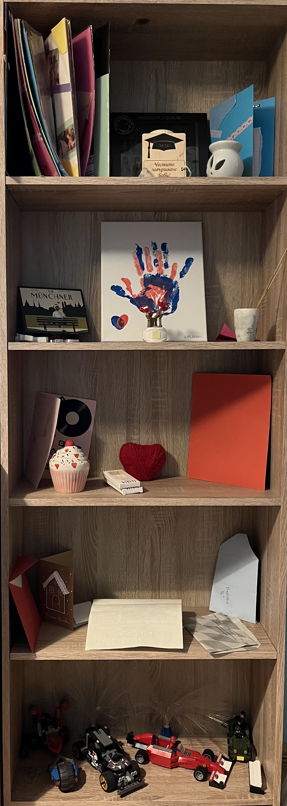
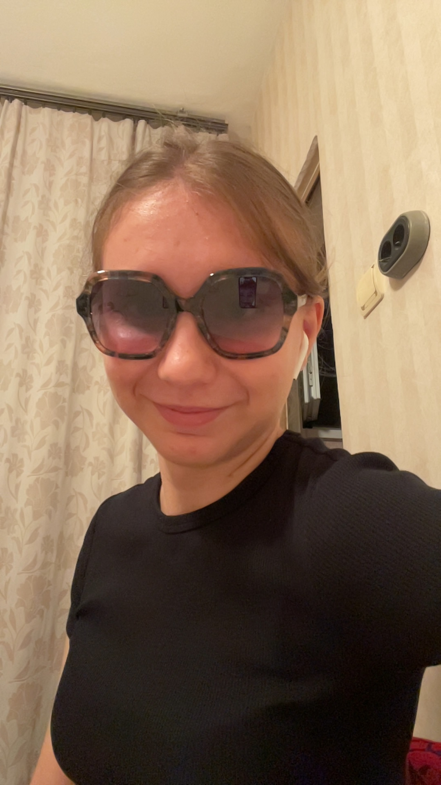

Причина 1
Една от причините, поради които те обичам много е старанието и креативността, които вкарваш в подаръците ти към мен. Тези подаръци са страшно важни за мен и са ми
много сантиментални и ще ги пазя до края на живота си с цената на всичко.

Причина 2
Друга от причините е твоята грижовност към мен. Всеки път когато ме успокояваш когато нещо ми тежи, всеки път когато просто решаваш да ме гушнеш и всеки път когато
ми готвиш когато съм гладен(и то винаги ми готвиш супер вкусно) са малко от нещата, които показват твоята грижа към мен и ме караш да се чувствам специален.
Причина 3
Още една от причините е, че си правила и продължаваш да правиш компромиси заради мен. Осъзнавам, че не съм сред най-лесните за обичане и си имам доста негативи, но силно
оценявам факта, че ти ми даваш шанс да ги променя. Това е важно за мен понеже може да не съм перфектен, но се старая с времето да се подобрявам, така че в даден момент
да не се налага да правиш повече компромиси и да не те натъжавам или разочаровам. Няма снимка, която да сложа за да опише това, затова просто ще сложа твоя сладка снимка.

Причина 4
Последната причина, която ще сложа тук, понеже има и други причинии, но ще стане много съдържание в една страница е колко си невероятна. Наистина ти не разбираш, но в
моите очи ти си повече от богиня. Ти си забавна, страшно умна, упорита, сладка, имаш невероятни очи, уникален характер, усмивка, която е по ярка и от слънцето, страшно си
секси и красива, косата ти е блестяща(буквално като я огрее слънцето и блести) и просто нямам думи да опиша твоята съвършенност и до този момент се чудя как точно аз
успях да те спечеля и с какво съм те заслужил. Тук ще сложа някоя от всичките твои снимки, които обожавам.